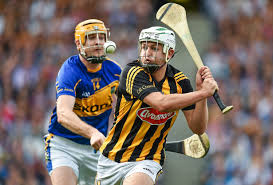

Sports
Ireland is a country home to many sports, two of which are orginally from Ireland. Ireland is best known for rugby, hurling, gaelic football, soccer, surfing, golf and horse racing.

Rugby
As of righting this in November of 2023 Ireland rugby is placed second in the world behind the current world cup world holders the Spring Boks(South Africa). Ireland is one of the best rugby nations in the world but unforunationly have a traggic history in terms of the rugby world cup as they have never been able to progress past the quater-finals, however they are still consindered the best team in the northern-hemisphere. Irish secondary schools often view rugby as the main sport of the country as well gaelic football and hurling. Rugby is one Irelands most valuable sports and everyone was watching Ireland in the world cup this year.
Hurling

Hurling is a tradishional Irish sport involving a small leather ball called a sliotar and a wooden stick shaped like a stick with flat head at one end and you try to score points and goals using the stick to hit the sliotar into the goals.
Gaelic Football

Its another one of Irelands traditional games in which a round ball is carried in their hands and bounced and kicked up every few seconds and you try to kick the ball in the goal at either end or over the bar for a point